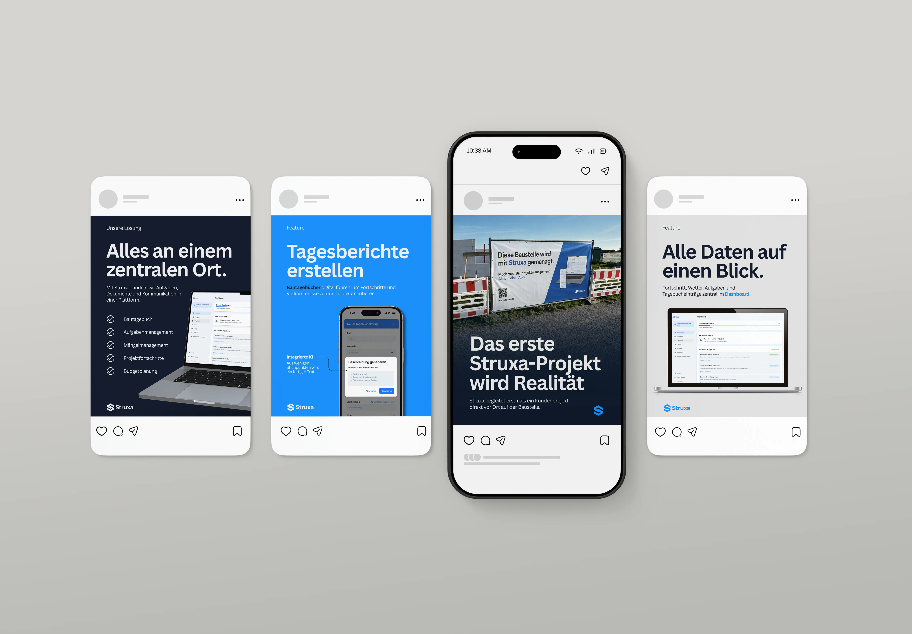
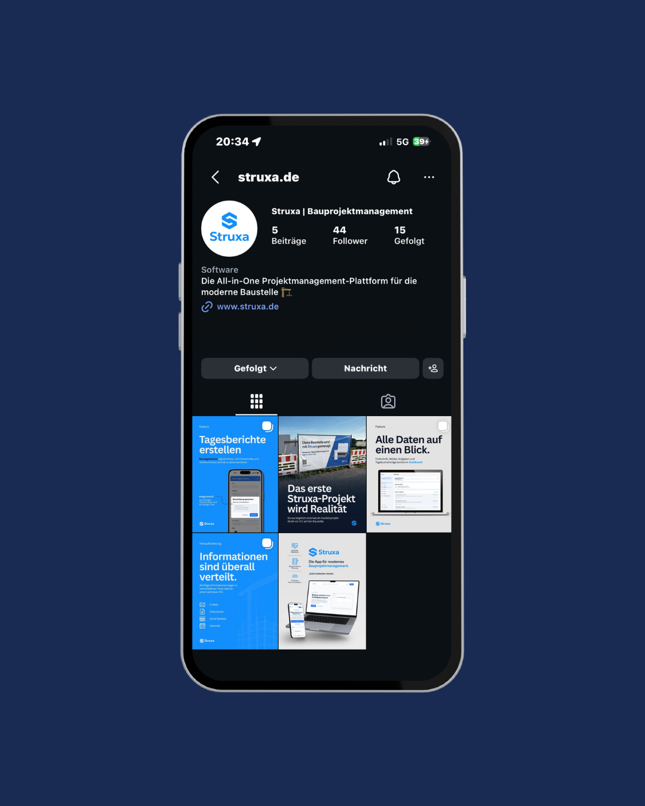

Marketing Struxa
Im Rahmen eines freiwilligen Praxisprojekts unterstütze ich Struxa, eine digitale Plattform zur
Organisation von Bauprojekten, bei der Entwicklung und Umsetzung der Marketingstrategie. Dabei
vertiefe ich meine Kenntnisse im digitalen Marketing und sammle praktische Erfahrungen entlang des
gesamten Kampagnenprozesses, von der Planung bis zur Performance-Analyse.
Im Bereich Social Media entwickle ich Content-Ideen, plane Beiträge und gestalte visuelle Inhalte für
einen einheitlichen Markenauftritt. Neben klassischen Feed-Posts ist die Erweiterung um weitere Content-Formate
wie Reels geplant. Ein besonderer Fokus liegt dabei auf authentischen Inhalten, die einen persönlichen Einblick
in das Team und die Arbeit hinter den Kulissen geben. Durch mehr Persönlichkeit und Transparenz soll die Marke
nahbarer werden und Vertrauen bei potenziellen Nutzer aufbauen.
Darüber hinaus übernehme ich die Planung, Konzeption und
Umsetzung von Google-Ads-Kampagnen. Dazu gehören die Keyword-Recherche, die Strukturierung von
Kampagnen und Anzeigen, die Budgetplanung sowie die Analyse der Kampagnenperformance. Auf Basis der
gewonnenen Daten identifiziere ich Optimierungspotenziale, um das Budget möglichst effizient
einzusetzen und die Gewinnung neuer Nutzer zu fördern.

Ein einheitliches Design und konsistente Formate
Übersicht des Instagram Feeds